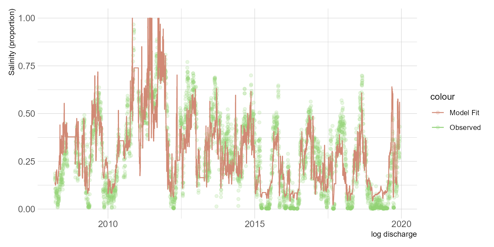

In the previous post I used nonlinear least squares to fit a logistic function to some salinity data. Here I explore using beta regression. Beta regression is appropriate for inherently proportional data (as opposed to proportion of success/failure or rates with shifting denominators, both covered by logistic and Poisson regression). Douma and Weedon Douma and Weedon (2019) provide a great flow chart for determining the type of model to use with proportional data. Of course, the salinity data we use comes reported in practical salinity units (psu). We can make an assumption that the estuary has some maximum salinity and ceate a response variable that is in a proportion unit. More on that in a bit. I will be using the same salinity and flow dataset loaded in the previous post.
Beta regression is appropriate when the response variable continuous and restricted to \((0,1)\). In this dataset, salinity approaches zero but never reaches zero. The maximum value is 28.74. First we need to transform the response variable to a proportion. I will apply \(y = \frac{salinity}{salinity_{max} + 1}\) to prevent \(y=1\). It might also be reasonable to use \(y = \frac{salinity}{35}\) if we assume oceanic salinity is 35 psu. This will depend on the data and in some cases (along the South Texas coast for example) estuaries become hypersaline and this would not be appropriate. Figure 1 depicts the density distribution of the response variable. The distribution looks a little wonky and tells me that we may get a poor model fit.

Figure 1: Distribution of salinity values
I am using the betareg package to fit the beta regression models (Cribari-Neto and Zeileis 2009). First, a simple model using log discharge as a predictor variable is fit. betareg uses the standard formula interface of y ~ x1 + x2. The type argument indicates the estimator used (readers are referred to Simas Simas, Barreto-Souza, and Rocha (2010)). The model summary provides a psuedo R2 measure of fit, parameter estimates, precision parameter estimate, \(\phi\).
df <- df %>%
mutate(
discharge = case_when(
discharge <= 0 ~ 0.0001,
discharge > 0 ~ discharge),
log_discharge = log(discharge),
y = (salinity/(max(salinity)+1)))
m1 <- betareg(y ~ log_discharge,
data = df,
type = "ML")
summary(m1)
Call:
betareg(formula = y ~ log_discharge, data = df, type = "ML")
Standardized weighted residuals 2:
Min 1Q Median 3Q Max
-6.4420 -0.6784 0.0746 0.6357 3.7678
Coefficients (mean model with logit link):
Estimate Std. Error z value Pr(>|z|)
(Intercept) 5.124797 0.067252 76.2 <2e-16 ***
log_discharge -0.740014 0.008342 -88.7 <2e-16 ***
Phi coefficients (precision model with identity link):
Estimate Std. Error z value Pr(>|z|)
(phi) 8.8408 0.2042 43.3 <2e-16 ***
---
Signif. codes: 0 '***' 0.001 '**' 0.01 '*' 0.05 '.' 0.1 ' ' 1
Type of estimator: ML (maximum likelihood)
Log-likelihood: 2865 on 3 Df
Pseudo R-squared: 0.3581
Number of iterations: 13 (BFGS) + 3 (Fisher scoring) A quick peak at the regression residuals should tell us a little about the model (Fig. 2). It appears the residuals are slightly biased. The data at low discharge/high salinity conditions is sparse. There are some possible patterns in the plots which suggests missing covariates. The resulting discharge-salinity plot shows the model struggling to incorporate the extreme values. I should note, that the raw data wasnt cleaned or validated. If I were doing this for a real project Id have to inspect if those are real values or not. In this case, I have no idea so I am leaving them in.

Figure 2: Inspection of model residuals for simple regression model.
df %>%
mutate(fits = fitted(m1)) %>%
ggplot() +
geom_point(aes(date, y, color = "Observed"), alpha = 0.2) +
geom_step(aes(date, fits, color = "Model Fit"), na.rm = TRUE) +
labs(x = "log discharge", y = "Salinity (proportion)") +
scale_color_ipsum() +
theme_ipsum_pub()
One reason I am exploring this approach is that we can easliy add additional covariates to the model. I suspect seasonal and long term predictors might improve the model. So I am adding terms for day of year as a seasonal predictor and decimal date as a long-term predictor.
df <- df %>%
mutate(doy = lubridate::yday(date),
decdate = lubridate::decimal_date(date))
m2 <- betareg(y ~ log_discharge + doy + decdate + decdate:doy,
data = df,
type = "ML")
summary(m2)
Call:
betareg(formula = y ~ log_discharge + doy + decdate + decdate:doy,
data = df, type = "ML")
Standardized weighted residuals 2:
Min 1Q Median 3Q Max
-6.8393 -0.6458 0.0730 0.6027 3.4820
Coefficients (mean model with logit link):
Estimate Std. Error z value Pr(>|z|)
(Intercept) 3.308e+01 1.633e+01 2.026 0.0428 *
log_discharge -6.721e-01 8.559e-03 -78.528 <2e-16 ***
doy 1.411e-01 7.140e-02 1.976 0.0482 *
decdate -1.439e-02 8.116e-03 -1.774 0.0761 .
doy:decdate -6.887e-05 3.546e-05 -1.942 0.0521 .
Phi coefficients (precision model with identity link):
Estimate Std. Error z value Pr(>|z|)
(phi) 9.8168 0.2282 43.02 <2e-16 ***
---
Signif. codes: 0 '***' 0.001 '**' 0.01 '*' 0.05 '.' 0.1 ' ' 1
Type of estimator: ML (maximum likelihood)
Log-likelihood: 3058 on 6 Df
Pseudo R-squared: 0.4166
Number of iterations: 55 (BFGS) + 16 (Fisher scoring)
df_beta <- df %>%
mutate(fits = fitted(m2),
resid = resid(m2))
df %>%
mutate(fits = fitted(m2)) %>%
ggplot() +
geom_point(aes(date, y, color = "Observed"), alpha = 0.2) +
geom_step(aes(date, fits, color = "Model Fit")) +
labs(x = "log discharge", y = "Salinity (proportion)") +
scale_color_ipsum() +
theme_ipsum_pub()
I skipped over inspecting the model residuals here as I just wanted to demonstrate the benefit of using beta regression over the NLS method described in the previous post. In the next post Ill take a look at fitting a flexible generalized additve model to the data.
Cribari-Neto, Francisco, and Achim Zeileis. 2009. Beta Regression in R.
Douma, Jacob C., and James T. Weedon. 2019. Analysing Continuous Proportions in Ecology and Evolution: A Practical Introduction to Beta and Dirichlet Regression. Methods in Ecology and Evolution 10 (9): 141230. https://doi.org/10.1111/2041-210X.13234.
Simas, Alexandre B, Wagner Barreto-Souza, and Andra V Rocha. 2010. Improved Estimators for a General Class of Beta Regression Models. Computational Statistics & Data Analysis 54 (2): 34866.